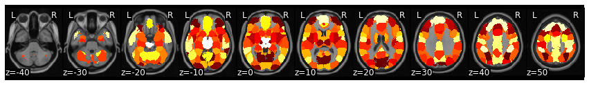

---
redirect_from:
  - "/features/notebooks/intersubject-correlation"
interact_link: content/features/notebooks/Intersubject_Correlation.ipynb
kernel_name: python3
kernel_path: content/features/notebooks
has_widgets: false
title: |-
  Intersubject Correlation
pagenum: 7
prev_page:
  url: /features/notebooks/Functional_Alignment.html
next_page:
  url: /features/notebooks/Event_Segmentation.html
suffix: .ipynb
search: activity synchrony brain et al values correlations correlation intersubject between participants however j com www doi isc signals phase data thus pairwise shared science e during s stimulus individual distribution individuals article not iscs mean m also measures connectivity regions similar signal distributions lahnakoski sciencedirect pii statistics similarity timecourse real functional null such calculated pairs temporal pdf conditions level within participant coefficient resting state n synchronization while linear below matrices g patterns timepoints used frequency c full hasson window imaging second analysis average shows glerean org using measure different generally approaches seen much higher averaging transformation category contrast show example

comment: "***PROGRAMMATICALLY GENERATED, DO NOT EDIT. SEE ORIGINAL FILES IN /content***"
---

    <main class="jupyter-page">
    <div id="page-info"><div id="page-title">Intersubject Correlation</div>
</div>
    <div class="jb_cell">

<div class="cell border-box-sizing text_cell rendered"><div class="inner_cell">
<div class="text_cell_render border-box-sizing rendered_html">
<h1 id="Intersubject-Correlations">Intersubject Correlations<a class="anchor-link" href="#Intersubject-Correlations"> </a></h1><p><em>Written by Juha Lahnakoski and Luke Chang</em></p>
<p>Synchrony between individuals happens at several levels from behavior to brain activity (<a href="https://www.sciencedirect.com/science/article/pii/S2352250X1830023X">Nummenmaa et al., 2018</a>, <a href="https://academic.oup.com/scan/article/14/6/667/5489905">Nastase et al., 2019</a>). To an observer, synchrony during interaction or joint motion can reflect prosocial qualities such rapport (<a href="https://www.sciencedirect.com/science/article/pii/S0022103109000328">Miles et al., 2009</a>) or affiliation (<a href="https://pdfs.semanticscholar.org/393f/e817c4e137335dc7b8c304be5037c15e716c.pdf">Hove and Risen, 2009</a>). During physically arousing ritualistic experiences, observers may selectively synchronize their heart rates while observing related, but not unrelated individuals participating in the ritual (<a href="https://www.pnas.org/content/pnas/108/20/8514.full.pdf">Konvalinka et al., 2011</a>). Synchrony of brain activity is associated with, among other things, shared psychological perspectives toward a stimulus (<a href="https://www.sciencedirect.com/science/article/pii/S1053811914004996">Lahnakoski et al., 2014</a>) and friendship (<a href="https://www.nature.com/articles/s41467-017-02722-7">Parkinson et al., 2018</a>), and may also be disturbed in psychiatric conditions ranging from developmental conditions such as autism (<a href="https://onlinelibrary.wiley.com/doi/pdf/10.1002/aur.89">Hasson et al., 2009</a>; <a href="https://www.sciencedirect.com/science/article/pii/S2213158213001411">Salmi et al., 2013</a>) to more acute conditions such as first-episode psychosis (<a href="https://www.sciencedirect.com/science/article/pii/S0006322318314690">Mäntylä et al., 2018</a>). Thus, measures of synchrony can offer a simple window to many psychological processes.</p>
<p>In brain imaging, synchrony of brain activity is most commonly measured using intersubject correlations (ISC; <a href="https://science.sciencemag.org/content/sci/303/5664/1634.full.pdf">Hasson et al., 2004</a>). As the name implies, this method calculates linear correlations between participants and derives summary statistics from these correlations to measure the level of similarity of brain activity. Most commonly, ISCs are calculated locally within each voxel (or region), while recent extensions also consider intersubject connectivity between different regions of the brain (see below).</p>
<p>Generally, ISCs are calculated using one of two main approaches. First one calculates correlations between all participant pairs to build a full intersubject correlation matrix. This matrix can be useful in various ways as can be seen in some of the following topics. The second popular option is to use the mean activity timecourse of the other participant as a model timecourse for each person individually. This procedure produces individual, rather than pairwise, spatial maps of similarity reflecting how similarly, or “typically”, each person’s brain activates. These maps lend themselves to similar analyses as one might perform with first level results of a traditional general linear model (GLM) analysis. However, some of the individual variability is lost with the latter approach, and thus the ISC values are typically of much higher magnitude than in the pairwise matrices. Optionally, individual values of similarity to all other participants can be calculated by averaging over the rows/columns of the ISC matrices. Usually, to make the correlation coefficients more normally distributed on the whole line of real number, the Fisher’s Z transformation (inverse hyperbolic tangent) would be applied before calculating the mean in this way. The effect of Fisher’s Z transformation affects mainly the higher end of absolute correlation values, eventually stretching the correlation coefficient 1 to infinity. However, with the typical range of values of pairwise ISCs, the effects of this transformation are relatively small reaching ~10% at the higher end of the scale of r=0.5.</p>
<p>Overall, the brain activity measured with fMRI during naturalistic stimulation conditions can be thought to consist of for main sources 1) stimulus-driven brain activity between individuals shared by all or most of the participants, 2) individual or idiosyncratic activity elicited by the stimulus, 3) intrinsic activity that is not time-locked to the stimulus, and 4) noise from various sources. Using the above-mentioned second approach to calculate ISCs with the average activity of everyone else, we arguably only catch the brain activity that is shared by a large proportion of the participants (category 1). Thus, this method evaluates how much of an individual’s brain activity is explained by this shared component. By contrast, if smaller groups of participants, e.g. pairs of friends within the study, share similar individual activity patterns (category 2), it may be better caught by the dyadic values in the pairwise matrices. Generally, the third category of activity is not readily detected by synchrony approaches. However, with inventive experimental designs, e.g. during verbal recall of previously experienced stimuli (<a href="https://www.ncbi.nlm.nih.gov/pmc/articles/PMC5191958/">Chen et al., 2017</a>), it is still possible to extract shared brain activity patterns by temporally reorganizing the data, even when the original experiences of the participants were out of sync. The optimal choice of analysis will depend on the research question and the type of shared activity patterns that are of particular interest.</p>
<p>Intersubject correlations give a summary statistic of synchrony over long periods of time, usually over an entire imaging session. However, the level of synchrony may change considerably from one moment to the next with the experimental condition. Time varying measures of synchrony will be discussed below, after we consider the topic of statistical inference on static intersubject correlation values.</p>

</div>
</div>
</div>
</div>

<div class="jb_cell">

<div class="cell border-box-sizing code_cell rendered">
<div class="input">

<div class="inner_cell">
    <div class="input_area">
<div class=" highlight hl-ipython3"><pre><span></span><span class="o">%</span><span class="k">matplotlib</span> inline

<span class="kn">import</span> <span class="nn">os</span>
<span class="kn">import</span> <span class="nn">glob</span>
<span class="kn">import</span> <span class="nn">numpy</span> <span class="k">as</span> <span class="nn">np</span>
<span class="kn">import</span> <span class="nn">pandas</span> <span class="k">as</span> <span class="nn">pd</span>
<span class="kn">import</span> <span class="nn">matplotlib.pyplot</span> <span class="k">as</span> <span class="nn">plt</span>
<span class="kn">import</span> <span class="nn">seaborn</span> <span class="k">as</span> <span class="nn">sns</span>
<span class="kn">from</span> <span class="nn">copy</span> <span class="kn">import</span> <span class="n">deepcopy</span>
<span class="kn">from</span> <span class="nn">nltools.data</span> <span class="kn">import</span> <span class="n">Brain_Data</span><span class="p">,</span> <span class="n">Design_Matrix</span><span class="p">,</span> <span class="n">Adjacency</span>
<span class="kn">from</span> <span class="nn">nltools.mask</span> <span class="kn">import</span> <span class="n">expand_mask</span><span class="p">,</span> <span class="n">roi_to_brain</span>
<span class="kn">from</span> <span class="nn">nltools.stats</span> <span class="kn">import</span> <span class="n">regress</span><span class="p">,</span> <span class="n">zscore</span><span class="p">,</span> <span class="n">fdr</span><span class="p">,</span> <span class="n">threshold</span>
<span class="kn">from</span> <span class="nn">nltools.file_reader</span> <span class="kn">import</span> <span class="n">onsets_to_dm</span>
<span class="kn">from</span> <span class="nn">nltools.external</span> <span class="kn">import</span> <span class="n">glover_hrf</span>
<span class="kn">from</span> <span class="nn">nilearn.plotting</span> <span class="kn">import</span> <span class="n">view_img</span><span class="p">,</span> <span class="n">glass_brain</span><span class="p">,</span> <span class="n">plot_stat_map</span>
<span class="kn">from</span> <span class="nn">sklearn.metrics</span> <span class="kn">import</span> <span class="n">pairwise_distances</span>
<span class="kn">from</span> <span class="nn">scipy.stats</span> <span class="kn">import</span> <span class="n">binom</span><span class="p">,</span> <span class="n">ttest_1samp</span><span class="p">,</span> <span class="n">pearsonr</span>


<span class="n">base_dir</span> <span class="o">=</span> <span class="s1">&#39;/Volumes/Engram/Data/Sherlock/fmriprep&#39;</span>
</pre></div>

    </div>
</div>
</div>

</div>
</div>

<div class="jb_cell">

<div class="cell border-box-sizing text_cell rendered"><div class="inner_cell">
<div class="text_cell_render border-box-sizing rendered_html">
<h1 id="Extract-Average-ROI-activity">Extract Average ROI activity<a class="anchor-link" href="#Extract-Average-ROI-activity"> </a></h1><p>We have already done this step for you, but want to show you how to extract average activity within a set of ROIs from a functional parcellation. There are many ways to do this, but here we will write out a separate CSV for each participant's run.</p>

</div>
</div>
</div>
</div>

<div class="jb_cell">

<div class="cell border-box-sizing code_cell rendered">
<div class="input">

<div class="inner_cell">
    <div class="input_area">
<div class=" highlight hl-ipython3"><pre><span></span><span class="n">mask</span> <span class="o">=</span> <span class="n">Brain_Data</span><span class="p">(</span><span class="s1">&#39;http://neurovault.org/media/images/2099/Neurosynth%20Parcellation_0.nii.gz&#39;</span><span class="p">)</span>
<span class="n">mask_x</span> <span class="o">=</span> <span class="n">expand_mask</span><span class="p">(</span><span class="n">mask</span><span class="p">)</span>
</pre></div>

    </div>
</div>
</div>

</div>
</div>

<div class="jb_cell">

<div class="cell border-box-sizing code_cell rendered">
<div class="input">

<div class="inner_cell">
    <div class="input_area">
<div class=" highlight hl-ipython3"><pre><span></span><span class="k">for</span> <span class="n">scan</span> <span class="ow">in</span> <span class="p">[</span><span class="s1">&#39;Part1&#39;</span><span class="p">,</span> <span class="s1">&#39;Part2&#39;</span><span class="p">]:</span>
    <span class="n">file_list</span> <span class="o">=</span> <span class="n">glob</span><span class="o">.</span><span class="n">glob</span><span class="p">(</span><span class="n">os</span><span class="o">.</span><span class="n">path</span><span class="o">.</span><span class="n">join</span><span class="p">(</span><span class="n">base_dir</span><span class="p">,</span> <span class="s1">&#39;*&#39;</span><span class="p">,</span> <span class="s1">&#39;func&#39;</span><span class="p">,</span> <span class="sa">f</span><span class="s1">&#39;*crop*</span><span class="si">{</span><span class="n">scan</span><span class="si">}</span><span class="s1">*hdf5&#39;</span><span class="p">))</span>
    <span class="k">for</span> <span class="n">f</span> <span class="ow">in</span> <span class="n">file_list</span><span class="p">:</span>
        <span class="n">sub</span> <span class="o">=</span> <span class="n">os</span><span class="o">.</span><span class="n">path</span><span class="o">.</span><span class="n">basename</span><span class="p">(</span><span class="n">f</span><span class="p">)</span><span class="o">.</span><span class="n">split</span><span class="p">(</span><span class="s1">&#39;_&#39;</span><span class="p">)[</span><span class="mi">0</span><span class="p">]</span>
        <span class="nb">print</span><span class="p">(</span><span class="n">sub</span><span class="p">)</span>
        <span class="n">data</span> <span class="o">=</span> <span class="n">Brain_Data</span><span class="p">(</span><span class="n">f</span><span class="p">)</span>
        <span class="n">roi</span> <span class="o">=</span> <span class="n">data</span><span class="o">.</span><span class="n">extract_roi</span><span class="p">(</span><span class="n">mask</span><span class="p">)</span>
        <span class="n">pd</span><span class="o">.</span><span class="n">DataFrame</span><span class="p">(</span><span class="n">roi</span><span class="o">.</span><span class="n">T</span><span class="p">)</span><span class="o">.</span><span class="n">to_csv</span><span class="p">(</span><span class="n">os</span><span class="o">.</span><span class="n">path</span><span class="o">.</span><span class="n">join</span><span class="p">(</span><span class="n">os</span><span class="o">.</span><span class="n">path</span><span class="o">.</span><span class="n">dirname</span><span class="p">(</span><span class="n">f</span><span class="p">),</span> <span class="sa">f</span><span class="s2">&quot;</span><span class="si">{</span><span class="n">sub</span><span class="si">}</span><span class="s2">_</span><span class="si">{</span><span class="n">scan</span><span class="si">}</span><span class="s2">_Average_ROI_n50.csv&quot;</span> <span class="p">),</span> <span class="n">index</span><span class="o">=</span><span class="kc">False</span><span class="p">)</span>
</pre></div>

    </div>
</div>
</div>

</div>
</div>

<div class="jb_cell">

<div class="cell border-box-sizing text_cell rendered"><div class="inner_cell">
<div class="text_cell_render border-box-sizing rendered_html">
<h2 id="Load-Time-Series">Load Time Series<a class="anchor-link" href="#Load-Time-Series"> </a></h2>
</div>
</div>
</div>
</div>

<div class="jb_cell">

<div class="cell border-box-sizing code_cell rendered">
<div class="input">

<div class="inner_cell">
    <div class="input_area">
<div class=" highlight hl-ipython3"><pre><span></span><span class="n">sub_list</span> <span class="o">=</span> <span class="p">[</span><span class="n">os</span><span class="o">.</span><span class="n">path</span><span class="o">.</span><span class="n">basename</span><span class="p">(</span><span class="n">x</span><span class="p">)</span><span class="o">.</span><span class="n">split</span><span class="p">(</span><span class="s1">&#39;_&#39;</span><span class="p">)[</span><span class="mi">0</span><span class="p">]</span> <span class="k">for</span> <span class="n">x</span> <span class="ow">in</span> <span class="n">glob</span><span class="o">.</span><span class="n">glob</span><span class="p">(</span><span class="n">os</span><span class="o">.</span><span class="n">path</span><span class="o">.</span><span class="n">join</span><span class="p">(</span><span class="n">base_dir</span><span class="p">,</span> <span class="s1">&#39;*&#39;</span><span class="p">,</span> <span class="s1">&#39;func&#39;</span><span class="p">,</span> <span class="s1">&#39;*Part1*csv&#39;</span><span class="p">))]</span>
<span class="n">sub_list</span><span class="o">.</span><span class="n">sort</span><span class="p">()</span>

<span class="n">sub_timeseries</span> <span class="o">=</span> <span class="p">{}</span>
<span class="k">for</span> <span class="n">sub</span> <span class="ow">in</span> <span class="n">sub_list</span><span class="p">:</span>
    <span class="n">part1</span> <span class="o">=</span> <span class="n">pd</span><span class="o">.</span><span class="n">read_csv</span><span class="p">(</span><span class="n">os</span><span class="o">.</span><span class="n">path</span><span class="o">.</span><span class="n">join</span><span class="p">(</span><span class="n">base_dir</span><span class="p">,</span> <span class="n">sub</span><span class="p">,</span> <span class="s1">&#39;func&#39;</span><span class="p">,</span> <span class="sa">f</span><span class="s1">&#39;</span><span class="si">{</span><span class="n">sub</span><span class="si">}</span><span class="s1">_Part1_Average_ROI_n50.csv&#39;</span><span class="p">))</span>
    <span class="n">part2</span> <span class="o">=</span> <span class="n">pd</span><span class="o">.</span><span class="n">read_csv</span><span class="p">(</span><span class="n">os</span><span class="o">.</span><span class="n">path</span><span class="o">.</span><span class="n">join</span><span class="p">(</span><span class="n">base_dir</span><span class="p">,</span> <span class="n">sub</span><span class="p">,</span> <span class="s1">&#39;func&#39;</span><span class="p">,</span> <span class="sa">f</span><span class="s1">&#39;</span><span class="si">{</span><span class="n">sub</span><span class="si">}</span><span class="s1">_Part2_Average_ROI_n50.csv&#39;</span><span class="p">))</span>
    <span class="n">sub_data</span> <span class="o">=</span> <span class="n">part1</span><span class="o">.</span><span class="n">append</span><span class="p">(</span><span class="n">part2</span><span class="p">)</span>
    <span class="n">sub_data</span><span class="o">.</span><span class="n">reset_index</span><span class="p">(</span><span class="n">inplace</span><span class="o">=</span><span class="kc">True</span><span class="p">,</span> <span class="n">drop</span><span class="o">=</span><span class="kc">True</span><span class="p">)</span>
    <span class="n">sub_timeseries</span><span class="p">[</span><span class="n">sub</span><span class="p">]</span> <span class="o">=</span> <span class="n">sub_data</span>
</pre></div>

    </div>
</div>
</div>

</div>
</div>

<div class="jb_cell">

<div class="cell border-box-sizing text_cell rendered"><div class="inner_cell">
<div class="text_cell_render border-box-sizing rendered_html">
<h1 id="Compute-Similarity-of-Time-Courses">Compute Similarity of Time Courses<a class="anchor-link" href="#Compute-Similarity-of-Time-Courses"> </a></h1>
</div>
</div>
</div>
</div>

<div class="jb_cell">

<div class="cell border-box-sizing text_cell rendered"><div class="inner_cell">
<div class="text_cell_render border-box-sizing rendered_html">
<h2 id="Average-Pairwise-Similarity-Matrix">Average Pairwise Similarity Matrix<a class="anchor-link" href="#Average-Pairwise-Similarity-Matrix"> </a></h2>
</div>
</div>
</div>
</div>

<div class="jb_cell">

<div class="cell border-box-sizing code_cell rendered">
<div class="input">

<div class="inner_cell">
    <div class="input_area">
<div class=" highlight hl-ipython3"><pre><span></span><span class="n">isc</span> <span class="o">=</span> <span class="p">{}</span>
<span class="k">for</span> <span class="n">roi</span> <span class="ow">in</span> <span class="nb">range</span><span class="p">(</span><span class="mi">50</span><span class="p">):</span>
    <span class="n">sub_rois</span> <span class="o">=</span> <span class="p">{}</span>
    <span class="k">for</span> <span class="n">sub</span> <span class="ow">in</span> <span class="n">sub_timeseries</span><span class="p">:</span>
        <span class="n">sub_rois</span><span class="p">[</span><span class="n">sub</span><span class="p">]</span> <span class="o">=</span> <span class="n">sub_timeseries</span><span class="p">[</span><span class="n">sub</span><span class="p">]</span><span class="o">.</span><span class="n">loc</span><span class="p">[</span><span class="n">roi</span><span class="p">]</span>
    <span class="n">sub_rois</span> <span class="o">=</span> <span class="n">pd</span><span class="o">.</span><span class="n">DataFrame</span><span class="p">(</span><span class="n">sub_rois</span><span class="p">)</span>
    <span class="n">time_dist</span> <span class="o">=</span> <span class="n">Adjacency</span><span class="p">(</span><span class="mi">1</span> <span class="o">-</span> <span class="n">pairwise_distances</span><span class="p">(</span><span class="n">sub_rois</span><span class="o">.</span><span class="n">T</span><span class="p">,</span> <span class="n">metric</span><span class="o">=</span><span class="s1">&#39;correlation&#39;</span><span class="p">),</span> <span class="n">matrix_type</span><span class="o">=</span><span class="s1">&#39;similarity&#39;</span><span class="p">)</span>
    <span class="n">isc</span><span class="p">[</span><span class="n">roi</span><span class="p">]</span> <span class="o">=</span> <span class="n">time_dist</span><span class="o">.</span><span class="n">mean</span><span class="p">()</span>
<span class="n">isc_brain</span> <span class="o">=</span> <span class="n">roi_to_brain</span><span class="p">(</span><span class="n">pd</span><span class="o">.</span><span class="n">Series</span><span class="p">(</span><span class="n">isc</span><span class="p">),</span> <span class="n">mask_x</span><span class="p">)</span>

<span class="n">isc_brain</span><span class="o">.</span><span class="n">plot</span><span class="p">()</span>
</pre></div>

    </div>
</div>
</div>

<div class="output_wrapper">
<div class="output">

<div class="jb_output_wrapper }}">
<div class="output_area">


<div class="output_png output_subarea ">

</div>

</div>
</div>
</div>
</div>

</div>
</div>

<div class="jb_cell">

<div class="cell border-box-sizing text_cell rendered"><div class="inner_cell">
<div class="text_cell_render border-box-sizing rendered_html">
<h2 id="Similarity-with-Average-Response">Similarity with Average Response<a class="anchor-link" href="#Similarity-with-Average-Response"> </a></h2>
</div>
</div>
</div>
</div>

<div class="jb_cell">

<div class="cell border-box-sizing code_cell rendered">
<div class="input">

<div class="inner_cell">
    <div class="input_area">
<div class=" highlight hl-ipython3"><pre><span></span><span class="n">all_rois</span> <span class="o">=</span> <span class="p">{}</span>
<span class="k">for</span> <span class="n">roi</span> <span class="ow">in</span> <span class="nb">range</span><span class="p">(</span><span class="mi">50</span><span class="p">):</span>
    <span class="n">sub_rois</span> <span class="o">=</span> <span class="p">{}</span>
    <span class="k">for</span> <span class="n">sub</span> <span class="ow">in</span> <span class="n">sub_timeseries</span><span class="p">:</span>
        <span class="n">sub_rois</span><span class="p">[</span><span class="n">sub</span><span class="p">]</span> <span class="o">=</span> <span class="n">sub_timeseries</span><span class="p">[</span><span class="n">sub</span><span class="p">]</span><span class="o">.</span><span class="n">loc</span><span class="p">[</span><span class="n">roi</span><span class="p">]</span>
    <span class="n">all_rois</span><span class="p">[</span><span class="n">roi</span><span class="p">]</span> <span class="o">=</span> <span class="n">pd</span><span class="o">.</span><span class="n">DataFrame</span><span class="p">(</span><span class="n">sub_rois</span><span class="p">)</span>
<span class="c1">#     time_dist = Adjacency(1 - pairwise_distances(sub_rois.T, metric=&#39;correlation&#39;), matrix_type=&#39;similarity&#39;)</span>
<span class="c1">#     isc[roi] = time_dist.mean()</span>
<span class="c1"># isc_brain = roi_to_brain(pd.Series(isc), mask_x)</span>
</pre></div>

    </div>
</div>
</div>

</div>
</div>

<div class="jb_cell">

<div class="cell border-box-sizing code_cell rendered">
<div class="input">

<div class="inner_cell">
    <div class="input_area">
<div class=" highlight hl-ipython3"><pre><span></span><span class="p">[</span><span class="n">all_rois</span><span class="p">[</span><span class="mi">0</span><span class="p">][</span><span class="n">x</span><span class="p">]</span> <span class="k">for</span> <span class="n">x</span> <span class="ow">in</span> <span class="n">all_rois</span><span class="p">[</span><span class="mi">0</span><span class="p">]]</span>
</pre></div>

    </div>
</div>
</div>

<div class="output_wrapper">
<div class="output">

<div class="jb_output_wrapper }}">
<div class="output_area">


<div class="output_text output_subarea output_execute_result">
<pre>[0     1.755921
 1     5.826709
 2     1.881618
 3     3.776599
 4     8.665937
 5     4.075354
 6     2.421694
 7     2.864211
 8     2.704671
 9     1.684665
 10    4.462688
 11    4.611202
 12   -0.565856
 13    3.747239
 14    0.801690
 15    1.274180
 16    2.816266
 17    2.639034
 18    0.981228
 19    5.246728
 20    4.516569
 21    0.973018
 22    1.266119
 23    3.339710
 24    5.465310
 25    2.181135
 26    1.948675
 27    4.325061
 28    2.513372
 29    2.057098
 30    0.002903
 31    2.749903
 32    3.362605
 33    2.350355
 34   -1.901185
 35    8.479704
 36    0.953000
 37    2.271374
 38    3.177643
 39    4.367660
 40    1.390778
 41    3.038824
 42    1.004956
 43    3.307391
 44    0.914738
 45    3.266528
 46    4.668272
 47    4.707671
 48   -0.345977
 49    0.681969
 Name: sub-01, dtype: float64,
 0    -0.110693
 1     1.628219
 2    -0.446085
 3     0.524105
 4     3.806597
 5     0.811877
 6     0.501276
 7     0.904836
 8    -0.418394
 9    -0.364482
 10    0.706353
 11    5.160813
 12   -1.992974
 13    0.269548
 14   -0.057145
 15    0.427398
 16   -0.910988
 17   -1.530484
 18   -0.071017
 19    0.017880
 20    1.309749
 21   -0.048935
 22   -0.271921
 23    1.352266
 24    1.216381
 25    0.057419
 26    0.153988
 27    3.687546
 28   -1.433624
 29    0.934414
 30   -0.597281
 31    1.488608
 32   -1.967253
 33   -0.248478
 34   -2.729169
 35    1.736033
 36   -0.342178
 37   -1.875012
 38    1.166752
 39    0.504266
 40    1.011438
 41    2.420459
 42    1.152915
 43    3.889462
 44    0.919832
 45    1.433462
 46    0.398189
 47    0.000818
 48   -0.477511
 49    0.395780
 Name: sub-02, dtype: float64,
 0    -0.322145
 1     0.960900
 2    -0.134207
 3     2.064416
 4     0.012062
 5     0.573566
 6     0.285075
 7    -0.691105
 8     2.429692
 9    -0.775123
 10    0.524082
 11    0.190873
 12   -1.449516
 13    0.963785
 14    0.246103
 15    0.522190
 16    1.966778
 17   -0.372603
 18   -0.924901
 19    0.751769
 20    0.927920
 21   -3.387833
 22    1.273402
 23    0.252827
 24    0.910122
 25   -0.430868
 26    3.077001
 27    0.524695
 28   -1.502577
 29   -1.855536
 30   -0.371154
 31    0.493533
 32   -0.243505
 33   -0.609881
 34   -0.372896
 35    3.420623
 36    0.829565
 37   -1.609072
 38   -0.068276
 39    0.274816
 40    1.175788
 41   -1.082097
 42   -0.999852
 43    0.955640
 44   -0.907230
 45    1.301362
 46    1.886597
 47    3.481616
 48   -0.282211
 49    0.373657
 Name: sub-03, dtype: float64,
 0     6.945572
 1     3.501313
 2     3.555465
 3     5.214579
 4     6.458667
 5     2.081323
 6     7.174296
 7     4.557761
 8     3.719430
 9     3.478781
 10    2.851851
 11    2.200712
 12    0.425889
 13    5.244839
 14    1.501483
 15    1.580207
 16    2.147078
 17    1.599874
 18    5.362215
 19    2.451871
 20    4.203923
 21    3.635585
 22    7.729580
 23    3.374148
 24    6.667666
 25    2.632316
 26    0.146719
 27    2.663712
 28    2.312330
 29    4.557629
 30    1.985127
 31    1.377644
 32    2.527032
 33    5.315447
 34    4.101823
 35    5.680946
 36    0.362513
 37    4.059141
 38    4.118663
 39    2.214631
 40    2.911767
 41    4.784730
 42    3.406578
 43    4.714051
 44    4.537344
 45    2.455716
 46    3.859700
 47    0.268307
 48    1.673299
 49    1.636086
 Name: sub-04, dtype: float64,
 0     3.212508
 1     4.671552
 2     3.506037
 3     1.419202
 4     5.174990
 5     1.713507
 6     1.828293
 7     3.774317
 8     1.099352
 9     0.677671
 10    0.428200
 11    2.520105
 12   -1.788737
 13    2.443279
 14    1.327301
 15    1.258604
 16    0.074679
 17    0.467344
 18    0.655105
 19    3.616801
 20    1.508699
 21    0.618363
 22    2.632017
 23    1.897723
 24    0.825749
 25    1.646982
 26    0.574301
 27    1.302833
 28    0.653119
 29    4.382517
 30   -0.222205
 31    1.558936
 32    5.166227
 33    0.427413
 34    4.849458
 35    4.358983
 36    0.813023
 37    2.834866
 38    1.471266
 39    1.727149
 40    1.158778
 41   -0.934904
 42    0.363114
 43    3.423187
 44    1.712122
 45    2.828913
 46    0.259445
 47    0.246671
 48    0.126360
 49    1.110619
 Name: sub-05, dtype: float64,
 0    -1.011378
 1    -0.434749
 2    -0.495009
 3    -1.241211
 4    -0.279499
 5     0.807306
 6    -0.665726
 7    -1.804560
 8    -1.638093
 9    -1.654563
 10   -1.709819
 11   -2.833465
 12   -1.296828
 13    1.410482
 14   -0.813607
 15   -2.181567
 16   -2.361628
 17   -0.771097
 18   -0.692117
 19   -0.274973
 20   -0.536957
 21   -1.656946
 22   -2.654780
 23   -0.101509
 24   -2.569384
 25   -1.398605
 26   -0.633097
 27   -1.459155
 28   -1.809027
 29   -2.383251
 30   -1.302026
 31   -0.703884
 32   -0.678549
 33   -0.584240
 34   -1.866092
 35    1.033393
 36   -2.111284
 37   -0.876909
 38   -1.072026
 39   -1.777765
 40    0.100844
 41   -2.339285
 42   -1.104496
 43   -2.174472
 44   -2.400373
 45    0.827157
 46   -0.682721
 47   -0.692236
 48   -2.930221
 49   -0.419516
 Name: sub-06, dtype: float64,
 0    -1.804834
 1     1.428522
 2     1.214976
 3     0.531481
 4     3.953307
 5     3.621174
 6     0.004817
 7     3.410103
 8     0.841768
 9     0.039541
 10   -0.210455
 11    3.831937
 12    1.573729
 13    7.723430
 14    0.513575
 15   -0.439533
 16    0.505944
 17    0.209457
 18   -0.423007
 19    0.111980
 20    2.010352
 21   -1.445112
 22   -1.026531
 23    0.698929
 24   -0.071825
 25    0.831520
 26    0.234818
 27    3.232481
 28    1.532544
 29   -0.653154
 30   -0.386678
 31    0.835676
 32    2.199253
 33   -0.109823
 34   -0.324602
 35    5.681489
 36    0.040444
 37    0.277774
 38    0.285824
 39    1.524027
 40    0.467676
 41    0.903656
 42    0.144932
 43    3.697380
 44   -0.205152
 45    2.143887
 46    2.790313
 47    0.025511
 48   -2.267887
 49    1.779357
 Name: sub-07, dtype: float64,
 0    -0.773546
 1     1.191026
 2     1.146730
 3    -0.215594
 4     0.218828
 5     0.465246
 6     0.423611
 7     2.534718
 8     1.708440
 9     0.359179
 10    0.003371
 11    3.703404
 12    1.205443
 13    3.099242
 14   -0.129771
 15    0.402097
 16    1.002260
 17    1.986639
 18   -2.096508
 19    1.399299
 20    0.280505
 21   -0.317147
 22   -0.277198
 23    0.357388
 24    1.508670
 25    0.165489
 26   -3.349713
 27   -1.019269
 28    0.246198
 29    1.118894
 30   -0.809173
 31    1.401156
 32   -1.646883
 33    0.845633
 34   -1.984635
 35    1.439446
 36   -0.770404
 37    1.110483
 38   -0.689080
 39    3.413193
 40   -0.848133
 41    1.857665
 42    1.610202
 43    1.365080
 44   -0.161366
 45    2.911507
 46   -1.378561
 47    0.840348
 48   -1.007981
 49    2.655089
 Name: sub-08, dtype: float64,
 0     0.041291
 1     0.986004
 2     0.548164
 3    -1.116591
 4     4.452692
 5     2.323129
 6    -2.013171
 7     2.007126
 8    -1.311508
 9    -3.327795
 10    1.364605
 11    1.837943
 12    1.824545
 13    4.490521
 14    0.235562
 15   -0.081000
 16   -0.317893
 17   -1.784202
 18   -0.780357
 19   -0.826757
 20    2.497173
 21   -1.749629
 22   -2.456510
 23    0.249743
 24    1.017850
 25    0.736995
 26   -1.523743
 27    1.026734
 28    1.625643
 29    1.227790
 30   -1.604796
 31    0.023829
 32    0.421235
 33    0.326357
 34   -1.132843
 35    6.683927
 36   -1.697305
 37   -0.160438
 38    0.481840
 39   -0.852846
 40   -0.618446
 41    1.101951
 42    0.164602
 43    3.711953
 44   -0.587412
 45    1.961450
 46    1.467381
 47   -2.939534
 48   -0.974918
 49    1.857367
 Name: sub-09, dtype: float64,
 0     1.744807
 1     3.811400
 2    -0.107969
 3     3.159128
 4     7.430335
 5     3.539846
 6     3.355498
 7    -0.271854
 8     2.139723
 9     2.714800
 10    5.859033
 11    6.055046
 12    3.440208
 13    4.104037
 14    0.577137
 15    2.652370
 16    3.396365
 17    1.604251
 18    1.580394
 19    1.669454
 20    1.934157
 21    2.413634
 22    2.542178
 23   -0.125107
 24    6.764451
 25    0.575344
 26    1.369830
 27    2.012703
 28    1.981661
 29   -1.191742
 30    1.984311
 31    2.029592
 32    0.500547
 33    0.988531
 34    3.229770
 35    5.436554
 36    1.957329
 37    5.819603
 38    2.752134
 39    4.092081
 40    1.795426
 41    3.540996
 42    2.420588
 43    5.900015
 44    0.471744
 45    0.355016
 46    2.767097
 47    1.970799
 48    1.031675
 49    1.923695
 Name: sub-10, dtype: float64,
 0    -0.743844
 1     3.265294
 2    -0.488769
 3     1.189106
 4     3.522982
 5     4.671082
 6     2.278351
 7     2.344511
 8     1.574315
 9     0.347125
 10    0.240085
 11    6.149371
 12    2.784499
 13    4.033875
 14    0.694983
 15    1.431710
 16    0.380746
 17    1.173421
 18   -0.951023
 19    2.189025
 20    3.011696
 21    0.569983
 22    1.336330
 23    1.013998
 24    3.420330
 25   -0.926563
 26    0.271413
 27    3.446138
 28    1.329211
 29    0.518775
 30   -0.228451
 31    2.335008
 32    0.361623
 33    0.090931
 34    1.544186
 35    2.145239
 36    0.676377
 37    1.533226
 38    1.937668
 39    3.565232
 40    1.345987
 41    1.250002
 42    0.370010
 43    4.899822
 44   -1.085307
 45    0.947336
 46    3.512065
 47    1.193682
 48    0.447645
 49    3.561357
 Name: sub-11, dtype: float64,
 0     3.352975
 1     7.004000
 2     2.802038
 3     6.364208
 4     8.512501
 5     6.014192
 6     3.731217
 7     2.446533
 8     1.626746
 9     3.176171
 10    5.340060
 11    8.394877
 12    7.884125
 13    8.359678
 14    1.868621
 15    3.175340
 16    4.252222
 17    2.421092
 18    2.687750
 19    6.170117
 20    6.596685
 21    0.617180
 22    2.003018
 23    2.214808
 24    9.237553
 25    2.001468
 26    0.390855
 27    4.686914
 28    4.511097
 29    1.826598
 30    0.833855
 31    4.482155
 32    4.639737
 33    2.588871
 34    3.085241
 35    8.386297
 36    0.595129
 37    5.668129
 38    4.049379
 39    4.371637
 40    3.036146
 41    3.956946
 42    2.055868
 43    7.186621
 44    1.366057
 45    3.865848
 46    6.532122
 47    0.854316
 48   -0.620975
 49    5.149884
 Name: sub-12, dtype: float64,
 0     0.202176
 1     3.763863
 2     1.416071
 3     2.322871
 4     5.564067
 5     0.839027
 6     0.255043
 7     3.271606
 8    -0.635157
 9     1.152683
 10    3.231381
 11    2.579122
 12    2.855792
 13    3.244861
 14    0.867607
 15    1.007083
 16    0.752208
 17   -0.869395
 18    0.436483
 19    1.387979
 20    3.088320
 21   -2.134684
 22    0.055008
 23    1.637052
 24    2.477829
 25    0.657628
 26   -0.979026
 27    3.016502
 28    3.289733
 29    2.134053
 30   -0.510169
 31    1.961970
 32    1.490442
 33   -0.708838
 34    3.365273
 35    5.879994
 36   -2.368772
 37   -0.745660
 38   -0.321976
 39    2.319676
 40    1.943015
 41    1.846425
 42   -0.400078
 43    3.166340
 44   -0.030462
 45    1.123769
 46    1.274781
 47   -0.312952
 48   -1.737283
 49    0.330639
 Name: sub-13, dtype: float64,
 0     0.782052
 1     2.881041
 2     0.080609
 3     0.294155
 4     2.862256
 5     1.292644
 6     2.547583
 7    -0.180990
 8    -0.106764
 9    -1.389368
 10   -0.921035
 11    0.279724
 12   -0.736896
 13    0.741038
 14   -0.117769
 15    0.238879
 16   -0.501902
 17    0.676108
 18    1.103549
 19    1.273979
 20    2.731279
 21    0.156136
 22    0.858249
 23    0.280458
 24    2.796210
 25    0.530968
 26   -1.656273
 27    0.565410
 28    0.452934
 29    3.205350
 30    0.612265
 31    0.442851
 32    1.806639
 33    0.918048
 34    1.119722
 35    3.392615
 36   -0.099563
 37   -0.792632
 38    1.500940
 39    0.901664
 40    0.356203
 41   -0.576740
 42    0.871691
 43    1.174262
 44    0.930655
 45    2.484248
 46    1.581608
 47    0.396971
 48    0.247258
 49    0.353700
 Name: sub-14, dtype: float64,
 0     1.628039
 1     4.057773
 2     1.461333
 3     0.661371
 4     3.583739
 5     3.939389
 6     4.389062
 7     3.261947
 8     0.345109
 9     1.742738
 10   -0.119562
 11    5.103288
 12    0.248603
 13    1.417747
 14    1.213045
 15    1.009656
 16   -1.780156
 17    1.220872
 18    1.258048
 19    3.392651
 20    1.042263
 21    1.411104
 22    1.602973
 23    1.862248
 24    4.088461
 25    1.697491
 26   -0.384342
 27    3.821640
 28    2.498811
 29    2.846714
 30    1.081186
 31    1.000213
 32    1.039467
 33    3.441854
 34    1.684497
 35    1.304501
 36    0.212378
 37    0.458055
 38    2.441909
 39    2.903857
 40    0.937777
 41    1.544129
 42    3.180552
 43    4.469963
 44    1.336467
 45    0.395114
 46    0.793879
 47    0.171853
 48    1.511803
 49    1.508015
 Name: sub-15, dtype: float64,
 0     6.349794e-13
 1     4.594633e-13
 2     7.496627e-13
 3     5.986871e-13
 4     2.711998e-13
 5     5.631161e-13
 6     4.622941e-13
 7     4.530130e-13
 8     7.177708e-13
 9     4.851744e-13
 10    3.709169e-13
 11   -4.102715e-15
 12    3.577791e-13
 13    3.898674e-13
 14    8.317744e-13
 15    3.979125e-13
 16    7.153044e-13
 17    8.050028e-13
 18    7.097381e-13
 19    5.357113e-13
 20    6.383960e-13
 21    6.017151e-13
 22    6.510163e-13
 23    6.560116e-13
 24    5.300442e-13
 25    5.415479e-13
 26    4.928703e-13
 27    6.845055e-13
 28    5.858942e-13
 29    4.351040e-13
 30    5.517389e-13
 31    3.557138e-13
 32    3.483579e-13
 33    5.570920e-13
 34    6.484323e-13
 35    5.085372e-13
 36    7.141083e-13
 37    4.041415e-13
 38    7.331552e-13
 39    5.095889e-13
 40    4.737102e-13
 41    3.371867e-13
 42    6.860883e-13
 43    1.835552e-13
 44    6.910848e-13
 45    6.133472e-13
 46    4.789857e-13
 47    7.799954e-13
 48    7.057942e-13
 49    3.609791e-13
 Name: sub-16, dtype: float64]</pre>
</div>

</div>
</div>
</div>
</div>

</div>
</div>

<div class="jb_cell">

<div class="cell border-box-sizing code_cell rendered">
<div class="input">

<div class="inner_cell">
    <div class="input_area">
<div class=" highlight hl-ipython3"><pre><span></span><span class="n">i</span><span class="o">=</span><span class="mi">0</span>
<span class="n">avg_isc_r</span> <span class="o">=</span> <span class="p">{}</span>
<span class="k">for</span> <span class="n">roi</span> <span class="ow">in</span> <span class="nb">range</span><span class="p">(</span><span class="mi">50</span><span class="p">):</span>
    <span class="n">all_r</span> <span class="o">=</span> <span class="p">{}</span>
    <span class="k">for</span> <span class="n">sub</span> <span class="ow">in</span> <span class="n">all_rois</span><span class="p">[</span><span class="n">roi</span><span class="p">]:</span>
        <span class="n">group_avg</span> <span class="o">=</span> <span class="n">all_rois</span><span class="p">[</span><span class="n">roi</span><span class="p">]</span><span class="o">.</span><span class="n">loc</span><span class="p">[:,</span><span class="n">all_rois</span><span class="p">[</span><span class="n">roi</span><span class="p">]</span><span class="o">.</span><span class="n">columns</span> <span class="o">!=</span> <span class="n">sub</span><span class="p">]</span><span class="o">.</span><span class="n">mean</span><span class="p">(</span><span class="n">axis</span><span class="o">=</span><span class="mi">1</span><span class="p">)</span>
        <span class="n">all_r</span><span class="p">[</span><span class="n">sub</span><span class="p">],</span> <span class="n">p</span> <span class="o">=</span> <span class="n">pearsonr</span><span class="p">(</span><span class="n">all_rois</span><span class="p">[</span><span class="n">roi</span><span class="p">][</span><span class="n">sub</span><span class="p">],</span> <span class="n">group_avg</span><span class="p">)</span>
        <span class="n">avg_isc_r</span><span class="p">[</span><span class="n">roi</span><span class="p">]</span> <span class="o">=</span> <span class="n">pd</span><span class="o">.</span><span class="n">Series</span><span class="p">(</span><span class="n">all_r</span><span class="p">)</span>
<span class="n">avg_isc_r</span> <span class="o">=</span> <span class="n">pd</span><span class="o">.</span><span class="n">DataFrame</span><span class="p">(</span><span class="n">avg_isc_r</span><span class="p">)</span>
<span class="n">avg_isc_r</span>
</pre></div>

    </div>
</div>
</div>

<div class="output_wrapper">
<div class="output">

<div class="jb_output_wrapper }}">
<div class="output_area">


<div class="output_html rendered_html output_subarea output_execute_result">
<div>
<style scoped>
    .dataframe tbody tr th:only-of-type {
        vertical-align: middle;
    }

    .dataframe tbody tr th {
        vertical-align: top;
    }

    .dataframe thead th {
        text-align: right;
    }
</style>
<table border="1" class="dataframe">
  <thead>
    <tr style="text-align: right;">
      <th></th>
      <th>0</th>
      <th>1</th>
      <th>2</th>
      <th>3</th>
      <th>4</th>
      <th>5</th>
      <th>6</th>
      <th>7</th>
      <th>8</th>
      <th>9</th>
      <th>...</th>
      <th>40</th>
      <th>41</th>
      <th>42</th>
      <th>43</th>
      <th>44</th>
      <th>45</th>
      <th>46</th>
      <th>47</th>
      <th>48</th>
      <th>49</th>
    </tr>
  </thead>
  <tbody>
    <tr>
      <th>sub-01</th>
      <td>0.748356</td>
      <td>0.736447</td>
      <td>0.865057</td>
      <td>0.684058</td>
      <td>0.694833</td>
      <td>0.743998</td>
      <td>0.738786</td>
      <td>0.823943</td>
      <td>0.624566</td>
      <td>0.808790</td>
      <td>...</td>
      <td>0.652550</td>
      <td>0.118277</td>
      <td>0.363761</td>
      <td>0.569747</td>
      <td>0.365645</td>
      <td>0.264736</td>
      <td>0.686591</td>
      <td>0.662956</td>
      <td>0.712507</td>
      <td>0.799203</td>
    </tr>
    <tr>
      <th>sub-02</th>
      <td>0.569214</td>
      <td>0.861525</td>
      <td>0.818693</td>
      <td>0.737793</td>
      <td>0.740949</td>
      <td>0.642857</td>
      <td>0.769693</td>
      <td>0.832345</td>
      <td>0.732641</td>
      <td>-0.281420</td>
      <td>...</td>
      <td>0.623868</td>
      <td>0.267525</td>
      <td>-0.503297</td>
      <td>-0.286891</td>
      <td>0.417314</td>
      <td>0.764211</td>
      <td>0.529019</td>
      <td>0.774178</td>
      <td>0.893284</td>
      <td>0.874796</td>
    </tr>
    <tr>
      <th>sub-03</th>
      <td>0.215853</td>
      <td>0.624439</td>
      <td>0.637802</td>
      <td>0.713321</td>
      <td>0.798070</td>
      <td>0.790270</td>
      <td>0.788946</td>
      <td>0.879664</td>
      <td>0.869180</td>
      <td>0.819086</td>
      <td>...</td>
      <td>0.140377</td>
      <td>0.347873</td>
      <td>0.131346</td>
      <td>0.452738</td>
      <td>0.478019</td>
      <td>0.499744</td>
      <td>0.723832</td>
      <td>0.717610</td>
      <td>0.794710</td>
      <td>0.774728</td>
    </tr>
    <tr>
      <th>sub-04</th>
      <td>0.306526</td>
      <td>0.609787</td>
      <td>0.790974</td>
      <td>0.396001</td>
      <td>0.603083</td>
      <td>0.252118</td>
      <td>0.525458</td>
      <td>0.628255</td>
      <td>0.679065</td>
      <td>0.637533</td>
      <td>...</td>
      <td>0.745460</td>
      <td>0.677036</td>
      <td>0.418312</td>
      <td>0.301435</td>
      <td>0.272332</td>
      <td>0.605047</td>
      <td>0.820816</td>
      <td>0.677751</td>
      <td>0.685901</td>
      <td>0.415052</td>
    </tr>
    <tr>
      <th>sub-05</th>
      <td>0.428479</td>
      <td>0.694906</td>
      <td>0.746619</td>
      <td>0.838413</td>
      <td>0.792086</td>
      <td>0.801231</td>
      <td>0.765997</td>
      <td>0.820664</td>
      <td>0.867333</td>
      <td>0.814567</td>
      <td>...</td>
      <td>0.179571</td>
      <td>0.180285</td>
      <td>-0.001464</td>
      <td>0.599250</td>
      <td>0.606638</td>
      <td>0.818953</td>
      <td>0.905427</td>
      <td>0.615107</td>
      <td>0.591806</td>
      <td>0.639295</td>
    </tr>
    <tr>
      <th>sub-06</th>
      <td>0.294382</td>
      <td>0.621599</td>
      <td>0.832831</td>
      <td>0.857960</td>
      <td>0.813303</td>
      <td>0.841535</td>
      <td>0.854475</td>
      <td>0.822105</td>
      <td>0.890826</td>
      <td>0.761885</td>
      <td>...</td>
      <td>0.658344</td>
      <td>0.397154</td>
      <td>0.119892</td>
      <td>-0.330484</td>
      <td>0.046226</td>
      <td>0.501395</td>
      <td>0.506246</td>
      <td>0.529517</td>
      <td>0.792454</td>
      <td>0.651299</td>
    </tr>
    <tr>
      <th>sub-07</th>
      <td>0.733165</td>
      <td>0.873626</td>
      <td>0.682673</td>
      <td>0.466276</td>
      <td>0.328735</td>
      <td>0.618183</td>
      <td>0.643854</td>
      <td>0.782665</td>
      <td>0.789117</td>
      <td>0.686631</td>
      <td>...</td>
      <td>0.535771</td>
      <td>0.685958</td>
      <td>0.457837</td>
      <td>0.613749</td>
      <td>0.605141</td>
      <td>0.750901</td>
      <td>0.782315</td>
      <td>0.698883</td>
      <td>0.803718</td>
      <td>0.752458</td>
    </tr>
    <tr>
      <th>sub-08</th>
      <td>0.387250</td>
      <td>0.364086</td>
      <td>0.485767</td>
      <td>0.566322</td>
      <td>0.154568</td>
      <td>-0.324794</td>
      <td>0.323130</td>
      <td>0.693798</td>
      <td>0.154706</td>
      <td>0.077630</td>
      <td>...</td>
      <td>0.204386</td>
      <td>0.476639</td>
      <td>0.522318</td>
      <td>0.554205</td>
      <td>0.318634</td>
      <td>0.417845</td>
      <td>0.521245</td>
      <td>0.820830</td>
      <td>0.105545</td>
      <td>0.687005</td>
    </tr>
    <tr>
      <th>sub-09</th>
      <td>0.734020</td>
      <td>0.792309</td>
      <td>0.877801</td>
      <td>0.859824</td>
      <td>0.796496</td>
      <td>0.782738</td>
      <td>0.771366</td>
      <td>0.834529</td>
      <td>0.762212</td>
      <td>0.671906</td>
      <td>...</td>
      <td>0.460337</td>
      <td>0.367605</td>
      <td>0.451114</td>
      <td>0.302941</td>
      <td>-0.225773</td>
      <td>0.115316</td>
      <td>0.289164</td>
      <td>0.539802</td>
      <td>0.792066</td>
      <td>0.621553</td>
    </tr>
    <tr>
      <th>sub-10</th>
      <td>0.528940</td>
      <td>0.333966</td>
      <td>0.683110</td>
      <td>0.661799</td>
      <td>0.434066</td>
      <td>0.565455</td>
      <td>0.471665</td>
      <td>0.551834</td>
      <td>0.481256</td>
      <td>0.463447</td>
      <td>...</td>
      <td>0.397182</td>
      <td>0.482234</td>
      <td>-0.206256</td>
      <td>-0.087457</td>
      <td>0.493583</td>
      <td>0.673510</td>
      <td>0.817466</td>
      <td>0.905424</td>
      <td>0.879214</td>
      <td>0.727890</td>
    </tr>
    <tr>
      <th>sub-11</th>
      <td>0.695829</td>
      <td>0.732621</td>
      <td>0.763976</td>
      <td>0.757260</td>
      <td>0.677044</td>
      <td>0.711152</td>
      <td>0.776475</td>
      <td>0.796055</td>
      <td>0.759095</td>
      <td>0.751328</td>
      <td>...</td>
      <td>0.533052</td>
      <td>0.687391</td>
      <td>0.555067</td>
      <td>0.676120</td>
      <td>0.456258</td>
      <td>0.636083</td>
      <td>0.787228</td>
      <td>0.816758</td>
      <td>0.616178</td>
      <td>0.727545</td>
    </tr>
    <tr>
      <th>sub-12</th>
      <td>0.811216</td>
      <td>0.693369</td>
      <td>0.819974</td>
      <td>0.874862</td>
      <td>0.039994</td>
      <td>0.119225</td>
      <td>0.470558</td>
      <td>0.462425</td>
      <td>0.560899</td>
      <td>0.709793</td>
      <td>...</td>
      <td>0.368771</td>
      <td>0.373963</td>
      <td>0.167264</td>
      <td>0.443146</td>
      <td>0.259438</td>
      <td>0.688152</td>
      <td>0.853293</td>
      <td>0.784909</td>
      <td>0.760940</td>
      <td>0.599713</td>
    </tr>
    <tr>
      <th>sub-13</th>
      <td>0.735028</td>
      <td>0.828451</td>
      <td>0.720966</td>
      <td>0.439719</td>
      <td>0.321267</td>
      <td>0.622926</td>
      <td>0.765588</td>
      <td>0.661018</td>
      <td>0.562418</td>
      <td>0.831640</td>
      <td>...</td>
      <td>0.689218</td>
      <td>0.782577</td>
      <td>0.374889</td>
      <td>0.108945</td>
      <td>0.417455</td>
      <td>0.644347</td>
      <td>0.816742</td>
      <td>0.719528</td>
      <td>0.738142</td>
      <td>0.848315</td>
    </tr>
    <tr>
      <th>sub-14</th>
      <td>0.526474</td>
      <td>0.449239</td>
      <td>0.701901</td>
      <td>0.788331</td>
      <td>0.820051</td>
      <td>0.717727</td>
      <td>0.750921</td>
      <td>0.707235</td>
      <td>0.798786</td>
      <td>0.729582</td>
      <td>...</td>
      <td>0.714800</td>
      <td>0.560824</td>
      <td>0.382766</td>
      <td>-0.155656</td>
      <td>-0.106877</td>
      <td>0.080555</td>
      <td>0.392156</td>
      <td>0.492857</td>
      <td>0.862472</td>
      <td>0.666661</td>
    </tr>
    <tr>
      <th>sub-15</th>
      <td>0.458322</td>
      <td>0.493672</td>
      <td>0.498799</td>
      <td>0.816099</td>
      <td>0.799013</td>
      <td>0.895522</td>
      <td>0.870563</td>
      <td>0.889834</td>
      <td>0.890259</td>
      <td>0.691744</td>
      <td>...</td>
      <td>0.748120</td>
      <td>0.803927</td>
      <td>0.491443</td>
      <td>0.510447</td>
      <td>0.697748</td>
      <td>0.774504</td>
      <td>0.727248</td>
      <td>0.733710</td>
      <td>0.783523</td>
      <td>0.718055</td>
    </tr>
    <tr>
      <th>sub-16</th>
      <td>-0.528693</td>
      <td>-0.363698</td>
      <td>0.708047</td>
      <td>0.753478</td>
      <td>0.813425</td>
      <td>0.773108</td>
      <td>0.836594</td>
      <td>0.878375</td>
      <td>0.788115</td>
      <td>0.766687</td>
      <td>...</td>
      <td>0.497534</td>
      <td>0.654310</td>
      <td>-0.003171</td>
      <td>0.297113</td>
      <td>0.515580</td>
      <td>0.696442</td>
      <td>0.827166</td>
      <td>0.846452</td>
      <td>0.849575</td>
      <td>0.788751</td>
    </tr>
  </tbody>
</table>
<p>16 rows × 50 columns</p>
</div>
</div>

</div>
</div>
</div>
</div>

</div>
</div>

<div class="jb_cell">

<div class="cell border-box-sizing code_cell rendered">
<div class="input">

<div class="inner_cell">
    <div class="input_area">
<div class=" highlight hl-ipython3"><pre><span></span><span class="n">n_boot</span> <span class="o">=</span> <span class="mi">5000</span>

<span class="n">all_bootstraps</span> <span class="o">=</span> <span class="p">[]</span>
<span class="k">for</span> <span class="n">b</span> <span class="ow">in</span> <span class="nb">range</span><span class="p">(</span><span class="n">n_boot</span><span class="p">):</span>
    <span class="n">all_bootstraps</span><span class="o">.</span><span class="n">append</span><span class="p">(</span><span class="n">np</span><span class="o">.</span><span class="n">mean</span><span class="p">(</span><span class="n">np</span><span class="o">.</span><span class="n">random</span><span class="o">.</span><span class="n">choice</span><span class="p">([</span><span class="mi">1</span><span class="p">,</span><span class="o">-</span><span class="mi">1</span><span class="p">],</span> <span class="n">avg_isc_r</span><span class="o">.</span><span class="n">shape</span><span class="p">)</span> <span class="o">*</span> <span class="n">avg_isc_r</span><span class="p">,</span> <span class="n">axis</span><span class="o">=</span><span class="mi">0</span><span class="p">))</span>
<span class="n">all_bootstraps</span> <span class="o">=</span> <span class="n">pd</span><span class="o">.</span><span class="n">DataFrame</span><span class="p">(</span><span class="n">all_bootstraps</span><span class="p">)</span>
</pre></div>

    </div>
</div>
</div>

</div>
</div>

<div class="jb_cell">

<div class="cell border-box-sizing code_cell rendered">
<div class="input">

<div class="inner_cell">
    <div class="input_area">
<div class=" highlight hl-ipython3"><pre><span></span><span class="n">np</span><span class="o">.</span><span class="n">mean</span><span class="p">(</span><span class="n">all_bootstraps</span> <span class="o">&gt;</span> <span class="n">avg_isc_r</span><span class="o">.</span><span class="n">mean</span><span class="p">())</span>
</pre></div>

    </div>
</div>
</div>

<div class="output_wrapper">
<div class="output">

<div class="jb_output_wrapper }}">
<div class="output_area">


<div class="output_text output_subarea output_execute_result">
<pre>0     0.0000
1     0.0000
2     0.0000
3     0.0000
4     0.0000
5     0.0000
6     0.0000
7     0.0000
8     0.0000
9     0.0000
10    0.0000
11    0.0000
12    0.0000
13    0.0000
14    0.0000
15    0.0000
16    0.0000
17    0.0000
18    0.0000
19    0.0000
20    0.0000
21    0.0000
22    0.0000
23    0.0000
24    0.0000
25    0.0002
26    0.0000
27    0.0000
28    0.0002
29    0.0000
30    0.0000
31    0.0000
32    0.0000
33    0.0000
34    0.0000
35    0.0000
36    0.0000
37    0.0000
38    0.0000
39    0.0002
40    0.0000
41    0.0000
42    0.0042
43    0.0040
44    0.0006
45    0.0000
46    0.0000
47    0.0000
48    0.0000
49    0.0000
dtype: float64</pre>
</div>

</div>
</div>
</div>
</div>

</div>
</div>

<div class="jb_cell">

<div class="cell border-box-sizing text_cell rendered"><div class="inner_cell">
<div class="text_cell_render border-box-sizing rendered_html">
<h1 id="Intersubject-Correlations">Intersubject Correlations<a class="anchor-link" href="#Intersubject-Correlations"> </a></h1><p><em>Written by Juha Lahnakoski and Luke Chang</em></p>
<p>Synchrony between individuals happens at several levels from behavior to brain activity (<a href="https://www.sciencedirect.com/science/article/pii/S2352250X1830023X">Nummenmaa et al., 2018</a>, <a href="https://academic.oup.com/scan/article/14/6/667/5489905">Nastase et al., 2019</a>). To an observer, synchrony during interaction or joint motion can reflect prosocial qualities such rapport (<a href="https://www.sciencedirect.com/science/article/pii/S0022103109000328">Miles et al., 2009</a>) or affiliation (<a href="https://pdfs.semanticscholar.org/393f/e817c4e137335dc7b8c304be5037c15e716c.pdf">Hove and Risen, 2009</a>). During physically arousing ritualistic experiences, observers may selectively synchronize their heart rates while observing related, but not unrelated individuals participating in the ritual (<a href="https://www.pnas.org/content/pnas/108/20/8514.full.pdf">Konvalinka et al., 2011</a>). Synchrony of brain activity is associated with, among other things, shared psychological perspectives toward a stimulus (<a href="https://www.sciencedirect.com/science/article/pii/S1053811914004996">Lahnakoski et al., 2014</a>) and friendship (<a href="https://www.nature.com/articles/s41467-017-02722-7">Parkinson et al., 2018</a>), and may also be disturbed in psychiatric conditions ranging from developmental conditions such as autism (<a href="https://onlinelibrary.wiley.com/doi/pdf/10.1002/aur.89">Hasson et al., 2009</a>; <a href="https://www.sciencedirect.com/science/article/pii/S2213158213001411">Salmi et al., 2013</a>) to more acute conditions such as first-episode psychosis (<a href="https://www.sciencedirect.com/science/article/pii/S0006322318314690">Mäntylä et al., 2018</a>). Thus, measures of synchrony can offer a simple window to many psychological processes.</p>
<p>In brain imaging, synchrony of brain activity is most commonly measured using intersubject correlations (ISC; <a href="https://science.sciencemag.org/content/sci/303/5664/1634.full.pdf">Hasson et al., 2004</a>). As the name implies, this method calculates linear correlations between participants and derives summary statistics from these correlations to measure the level of similarity of brain activity. Most commonly, ISCs are calculated locally within each voxel (or region), while recent extensions also consider intersubject connectivity between different regions of the brain (see below).</p>
<p>Generally, ISCs are calculated using one of two main approaches. First one calculates correlations between all participant pairs to build a full intersubject correlation matrix. This matrix can be useful in various ways as can be seen in some of the following topics. The second popular option is to use the mean activity timecourse of the other participant as a model timecourse for each person individually. This procedure produces individual, rather than pairwise, spatial maps of similarity reflecting how similarly, or “typically”, each person’s brain activates. These maps lend themselves to similar analyses as one might perform with first level results of a traditional general linear model (GLM) analysis. However, some of the individual variability is lost with the latter approach, and thus the ISC values are typically of much higher magnitude than in the pairwise matrices. Optionally, individual values of similarity to all other participants can be calculated by averaging over the rows/columns of the ISC matrices. Usually, to make the correlation coefficients more normally distributed on the whole line of real number, the Fisher’s Z transformation (inverse hyperbolic tangent) would be applied before calculating the mean in this way. The effect of Fisher’s Z transformation affects mainly the higher end of absolute correlation values, eventually stretching the correlation coefficient 1 to infinity. However, with the typical range of values of pairwise ISCs, the effects of this transformation are relatively small reaching ~10% at the higher end of the scale of r=0.5.</p>
<p>Overall, the brain activity measured with fMRI during naturalistic stimulation conditions can be thought to consist of for main sources 1) stimulus-driven brain activity between individuals shared by all or most of the participants, 2) individual or idiosyncratic activity elicited by the stimulus, 3) intrinsic activity that is not time-locked to the stimulus, and 4) noise from various sources. Using the above-mentioned second approach to calculate ISCs with the average activity of everyone else, we arguably only catch the brain activity that is shared by a large proportion of the participants (category 1). Thus, this method evaluates how much of an individual’s brain activity is explained by this shared component. By contrast, if smaller groups of participants, e.g. pairs of friends within the study, share similar individual activity patterns (category 2), it may be better caught by the dyadic values in the pairwise matrices. Generally, the third category of activity is not readily detected by synchrony approaches. However, with inventive experimental designs, e.g. during verbal recall of previously experienced stimuli (<a href="https://www.ncbi.nlm.nih.gov/pmc/articles/PMC5191958/">Chen et al., 2017</a>), it is still possible to extract shared brain activity patterns by temporally reorganizing the data, even when the original experiences of the participants were out of sync. The optimal choice of analysis will depend on the research question and the type of shared activity patterns that are of particular interest.</p>
<p>Intersubject correlations give a summary statistic of synchrony over long periods of time, usually over an entire imaging session. However, the level of synchrony may change considerably from one moment to the next with the experimental condition. Time varying measures of synchrony will be discussed below, after we consider the topic of statistical inference on static intersubject correlation values.</p>

</div>
</div>
</div>
</div>

<div class="jb_cell">

<div class="cell border-box-sizing text_cell rendered"><div class="inner_cell">
<div class="text_cell_render border-box-sizing rendered_html">
<h1 id="Intersubject-functional-connectivity">Intersubject functional connectivity<a class="anchor-link" href="#Intersubject-functional-connectivity"> </a></h1><p>Functional connectivity reflects the similarity of activity timecourses between pairs of regions and it has been particularly popular in recent years in inquiry to the functional architecture of the brain during resting state, in the absence of task or external stimulation. Given enough data, these resting state correlations are stable within an individual and perturbations to the correlations between regions caused by external stimuli or tasks are relatively small (<a href="https://www.sciencedirect.com/science/article/pii/S0896627318302411">Gratton et al., 2018</a>). Thus, functional connectivity appears to reflect intrinsic fluctuations of BOLD activity more than stimulus evoked processing.</p>
<p>To specifically address how brain regions coactivate due to naturalistic stimulation, intersubject synchrony analysis was recently extended to measure brain connectivity between subjects (<a href="https://www.nature.com/articles/ncomms12141">Simony et al., 2016</a>), or intersubject functional connectivity (ISFC). This method has the benefit that it only highlights those connections that are activated consistently between participants by the stimulus while disregarding the intrinsic fluctuations as they are not time-locked between individuals. This type of intersubject connectivity can suggest how distant brain regions cooperate to make sense of the incoming stimulus streams. However, it can also highlight pairs of regions that show similar temporal activity patterns that are driven by the external stimulus rather than neural connections between the regions.  which should be taken into account in the interpretation. Future work will evaluate the usefulness of these measures for elucidating individual variability and, for example, effects of psychiatric disorders on intersubject connectivity. However, our initial results presented in this conference suggest that stimulus-driven connectivity may reveal exciting insight into how functional network structure relevant for understanding naturalistic events is affected by social interaction disorders (see poster 206 and the accompanying talk in the Neurodevelopmental Disorders and Environmental Impact oral session).</p>

</div>
</div>
</div>
</div>

<div class="jb_cell">

<div class="cell border-box-sizing text_cell rendered"><div class="inner_cell">
<div class="text_cell_render border-box-sizing rendered_html">
<h1 id="Temporal-dynamics-of-intersubject-synchrony">Temporal dynamics of intersubject synchrony<a class="anchor-link" href="#Temporal-dynamics-of-intersubject-synchrony"> </a></h1><p>Most studies so far have focused on correlations calculated over entire datasets to reveal the average connectivity or intersubject similarity in a group of participants. However, functional brain networks are widely accepted to be dynamic. Thus, it is not clear whether tools like correlation, which assumes a constant statistical dependence between the variables over the entire imaging session, are the most appropriate way to analyze data gathered during complex naturalistic stimulation.</p>
<p>To get an intuition of temporal constituents of Pearson’s correlation coefficient of two signals, it can be written as the expected value of the elementwise product of the signals (standardized to zero mean and unit variance). This case can be seen in the top panel of video 2, where two independent sinusoidal signals are shown in blue and red, and their elementwise product is shown in gray dotted line. The correlation coefficient of the two signals is the expected value of the gray signal, that is, sum of the timepoints divided by N-1, where N is the number of timepoints. This timecourse gives direct insight to which timepoints are contributing most to the correlation. However, as can be seen from this simple example, the correlation coefficient tends to be dominated by high-amplitude timepoints; when one (or both) of the signals is close to zero the mean value, the product is also close to zero. By contrast, when both are far away from zero, the timepoints contribute more to the overall correlation, either negatively when the signals have opposite signs or positively when the signs are the same. The vertical histogram on the left shows a dynamically updating distribution of the elementwise products and the correlation coefficient as the number of timepoints increases. As can be seen, after a few periods of the signal, the correlation coefficient stabilizes near zero. Similarly, ISC can be derived by producing a similar timecourse of elementwise products for all pairs of subjects and averaging over the participant pairs (<a href="https://onlinelibrary.wiley.com/doi/pdf/10.1002/hbm.23591">Lahnakoski et al., 2017</a>). This timecourse directly produces the ISC values, but the dependence on the extreme amplitude values remains and the timecourse only shows the relative importance of the individual timepoints rather than a readily interpretable statistical measure of synchrony.</p>
<p>A simple, and still a popular way of looking at temporal variability of synchrony and limit the effect of the local amplitudes is to calculate correlation in sliding time windows. This allows the estimation of synchrony also during time windows when the signals are close to their mean values as the amplitude within each time window is standardized when the correlation is calculated. However, the length of the temporal window forces a trade-off between temporal accuracy and stability of the correlation coefficient calculated in that window. Very short time windows allow one to follow precisely when correlations occur, but short windows yield extremely unstable correlations, which can be dominated completely by e.g. single co-occurring spikes or slopes. Thus, sliding-window correlations in short time-windows are often characterized by extreme correlation values that change signs wildly.</p>
<p>Calculating the phase synchronization or phase locking of signals is one option to estimate timevarying synchronization of signals in a way that largely separates synchronization from signal amplitudes. It has been used widely for electrophysiological measures such as EEG and MEG, and more recently also for fMRI (<a href="https://www.liebertpub.com/doi/pdfplus/10.1089/brain.2011.0068">Glerean et al., 2012</a>). Phase synchronization leverages the Hilbert transform to transform the real-valued signals into a complex valued, analytic signal, which is a generalization of the phasor notation of sinusoidal signals that are used widely in engineering applications. For illustration, two examples of analytic signals with constant frequency and amplitude are shown in the bottom panel of video 2, plotted in three dimensions (real, imaginary and time axes). In contrast to a time-invariant phasor, an analytic signal has a timevarying amplitude envelope and frequency and can thus be used to track changes in synchrony over time. However, for meaningful separation of the envelope and phase of the signal, the original signal has to be contained in a limited frequency band, which can be obtained through band-pass filtering. The smaller this frequency band is, the better the amplitude envelope is separated into a lower frequency than the phase of the signal in the pass-band (<a href="https://www.liebertpub.com/doi/pdfplus/10.1089/brain.2011.0068">Glerean et al., 2012</a>). However, poorly designed filters may affect the shape of the signal considerably and in extreme cases even remove the signal of interest. For example, some filters can cause non-linear phase shifts across the frequency spectrum, or excessively tight pass-band may miss important frequencies completely.</p>
<p>Compared to sliding-window correlations, phase synchronization has the benefit that no explicit time windowing is required and synchronization is estimated at the original sampling frequency of the signals. However, in a single pairwise comparison, phase synchrony can get extreme values by chance, much like a stopped clock that shows the right time twice a day. This is illustrated in the bottom panel of Video 2. Despite the two signals being independent, the histogram on the left shows that many of the time points show extreme synchrony values. Accordingly, the estimate of mean synchrony oscillates with the phase of the signals, until eventually stabilizing around zero as expected for independent signals. Thus, phase synchrony of two signals has the potential of producing extreme synchrony values much like time windowed correlations. This can be mitigated by averaging. Averaging over the timepoints of a full session, intersubject phase synchronization (ISPS) of regional activity produces highly similar group-level results to ISC. However, this removes the benefit of the temporal accuracy of ISPS and is thus of limited use. By contrast, averaging over (pairs of) subjects improves the reliability of synchrony in a larger population while retaining the temporal accuracy.</p>
<p>Note that, here, we have used the cosine of the angular difference as a measure of pairwise synchrony. This produces time-averaged values that are consistent with the ISCs in the regions. However, there are other measures can also be derived, such as the phase locking value, that is the absolute value of the mean of the phase vectors of the participants (<a href="https://www.liebertpub.com/doi/pdfplus/10.1089/brain.2011.0068">Glerean et al., 2012</a>). This is simpler than pairwise measures, and can be beneficial particularly where memory is of concern, but it is limited in the range [0 1] rather than [-1 1] as for correlation coefficients.</p>
<p></p>

</div>
</div>
</div>
</div>

<div class="jb_cell">

<div class="cell border-box-sizing text_cell rendered"><div class="inner_cell">
<div class="text_cell_render border-box-sizing rendered_html">
<h1 id="Statistics-for-intersubject-synchrony">Statistics for intersubject synchrony<a class="anchor-link" href="#Statistics-for-intersubject-synchrony"> </a></h1><p>Because of the dependence between the pairwise correlation values and the inflated number of variables in the pairwise correlation matrices, non-parametric statistics are generally preferred when evaluating the significance of these correlations. This is often achieved by creating surrogate data and repeating the same analysis enough times (e.g. tens of thousands of iterations) to build an empirical null distribution. Surrogate data can be created, for example, by circularly shifting the timecourses of the participants or scrambling the phases of the Fourier transform of the signals and transforming these scrambled signals back to the time domain. Various blockwise scrambling techniques have also been applied and autoregressive models have been proposed to create artificial data for statistical inference . These approaches have the benefit that, when properly designed, they retain important characteristics of the original signal, such as the frequency content and autocorrelation, while removing temporal synchrony in the data. To illustrate these approaches, Video/Figure 1 below shows the process of creating these null distributions and compares these to a similar distribution built based on real resting state data of the same duration in the same participants recorded just prior to the movie data in the same imaging study. Resting state is an ideal condition for demonstrating the true null distribution of intersubject correlation as it involves no external synchronizing factors apart from the repeating noise of the scanner gradients, which are generally not of interest to us. Thus, any correlations in the resting state data arise by chance. As can be seen, the null distributions based on the surrogate data follow the distribution of resting state ISCs well as the number of iterations increases.</p>
<p>Figure 1: Distributions of pairwise ISC values  in real movie data (blue), compared with null distributions based on temporally shifted (red) and phase scrambled (yellow) data, as well as real resting state data (purple). Top rows show the timecourse of a randomly selected voxel of one participant that have been shifted or scrambled in the case of the surrogate timecourses. Second row shows the timecourse of a second participant extracted from the same voxel. Bottom plot shows how the distributions evolve as the number of iterations increases. Dashed vertical lines correspond to the 95th percentile of each distribution. Note the distinctly extended right tail in the movie data, whereas other distributions appear highly consistent.</p>
<p>The number of participants, N, of the mean of pairwise ISC analysis greatly affects the null distribution. As the values are always below one, the standard deviation of the null distribution is reduced with the square of N (see Figure 2 below). This is true also for the resting state data and thus it does not affect the validity of the distributions. However, as a result, very small correlations become significant as N increases, which may not be desirable as interpretation of very weak correlations can be troublesome.</p>
<p>When the mean activity of participants is used the activity timecourse of a left-out participant, the effects of the sample size and variance of the ISC values is greatly reduced and group level statistics can be derived more similarly to traditional second level GLM analyses. For example, parametric t-statistics are largely consistent with those derived based on surrogate or resting state data.</p>
<p>Overall, the statistics for ISFC can be performed similarly to local ISC. However, it is important to note that the distribution of mean correlations between two different regions differs from within-region correlations. In particular, as the number of participant pairs increases, the distribution of ISC values is increasingly skewed to the right as negative correlations are eliminated nearly completely due to dependencies between the pairwise correlations. This is intuitive as any larger group of individuals who correlate negatively with other participants would often be positively correlated within the group, thus cancelling out any large negative values in the mean ISC. By contrast, when correlations are calculated between two different regions, negative values can occur if the stimulus-evoked activity timecourses in the two regions are consistently anticorrelated.</p>
<p>The distributions of ISCs and ISFCs in real and null data are depicted below as a function of the number of participants on a logarithmic color scale. Overall, the null distribution of the ISFC values appears slightly wider than the ISC null distribution. However, this is mainly driven by the increased number values in the correlation matrices for the ISFC (off-diagonal entries) than ISC (diagonal entries) as the shape of the distribution appears similar but the tail is truncated (see bottom right panel).</p>
<p></p>
<p>Figure 2: Distributions of real ISCs and ISFCs (top) and their null distributions (bottom) with different numbers of participants. Left-most panels show the ISCs and middle panels the ISFCs. Right-most panels show example distributions from the two left panels corresponding to the case with N=11 participants. The distributions are plotted on a logarithmic scale to make the differences in the left tails visible. Note that negative numbers exist in the real ISFC distribution while they are largely eliminated in the ISC.</p>
<p>Statistics for timevarying measures of synchrony can largely follow a similar bootstrapping approach as with the static measures of synchrony. However, depending on the values that are used, statistics of phase synchrony differ slightly from linear measures of synchrony. In particular, circular statistics can be used to estimate the parametric statistics of phase differences on the unit circle, as wrapping of the phase angle causes the angular difference to change signs as the signals rotate around the circle. Thus, angular difference of –pi and pi are equivalent on the unit circle, but are at the different ends of a linear axis. However, in the current examples, we have used cosines of the angular differences, which is an even function and thus is indifferent to the sign of the angular difference. It also naturally maps the angular difference to a linear range between -1 and 1 similar to the correlation coefficient, thus simplifying the interpretation. If the sign of the phase shift is of interest, such as when trying to infer the temporal precedence of one signal over another, alternative measures taking into account the direction of the phase shift may be preferable.</p>

</div>
</div>
</div>
</div>

<div class="jb_cell">

<div class="cell border-box-sizing text_cell rendered"><div class="inner_cell">
<div class="text_cell_render border-box-sizing rendered_html">
<h1 id="Recommended-reading">Recommended reading<a class="anchor-link" href="#Recommended-reading"> </a></h1><p>We might want to highlight a few key papers and just leave embedded links for the other ones.</p>
<ul>
<li><p>Chen, J., Leong, Y. C., Honey, C. J., Yong, C. H., Norman, K. A., and Hasson, U. (2017). Shared memories reveal shared structure in neural activity across individuals. Nat. Neurosci. 20, 115–125. doi:10.1038/nn.4450.</p>
</li>
<li><p>Glerean, E., Salmi, J., Lahnakoski, J. M., Jääskeläinen, I. P., and Sams, M. (2012). Functional Magnetic Resonance Imaging Phase Synchronization as a Measure of Dynamic Functional Connectivity. Brain Connect. 2, 91–101. doi:10.1089/brain.2011.0068.</p>
</li>
<li><p>Gratton, C., Laumann, T. O., Nielsen, A. N., Greene, D. J., Gordon, E. M., Gilmore, A. W., et al. (2018). Functional Brain Networks Are Dominated by Stable Group and Individual Factors, Not Cognitive or Daily Variation. Neuron 98, 439-452.e5. doi:10.1016/j.neuron.2018.03.035.</p>
</li>
<li><p>Hasson, U., Avidan, G., Gelbard, H., Vallines, I., Harel, M., Minshew, N., et al. (2009). Shared and idiosyncratic cortical activation patterns in autism revealed under continuous real-life viewing conditions. Autism Res. 2, 220–231. doi:10.1002/aur.89.</p>
</li>
<li><p>Hasson, U., Nir, Y., Levy, I., Fuhrmann, G., and Malach, R. (2004). Intersubject synchronization of cortical activity during natural vision. Science (80-. ). 303, 1634–40. doi:10.1126/science.1089506.</p>
</li>
<li><p>Hove, M. J., and Risen, J. L. (2009). It’s All in the Timing: Interpersonal Synchrony Increases Affiliation. Soc. Cogn. 27, 949–960. doi:10.1521/soco.2009.27.6.949.</p>
</li>
<li><p>Konvalinka, I., Xygalatas, D., Bulbulia, J., Schjødt, U., Jegindø, E. M., Wallot, S., et al. (2011). Synchronized arousal between performers and related spectators in a fire-walking ritual. Proc. Natl. Acad. Sci. U. S. A. 108, 8514–8519. doi:10.1073/pnas.1016955108.</p>
</li>
<li><p>Lahnakoski, J. M., Glerean, E., Jääskeläinen, I. P., Hyönä, J., Hari, R., Sams, M., et al. (2014). Synchronous brain activity across individuals underlies shared psychological perspectives. Neuroimage 100C, 316–324. doi:10.1016/j.neuroimage.2014.06.022.</p>
</li>
<li><p>Lahnakoski, J. M., Jääskeläinen, I. P., Sams, M., and Nummenmaa, L. (2017). Neural mechanisms for integrating consecutive and interleaved natural events. Hum. Brain Mapp. doi:10.1002/hbm.23591.</p>
</li>
<li><p>Mäntylä, T., Nummenmaa, L., Rikandi, E., Lindgren, M., Kieseppä, T., Hari, R., et al. (2018). Aberrant Cortical Integration in First-Episode Psychosis During Natural Audiovisual Processing. Biol. Psychiatry 84, 655–664. doi:10.1016/j.biopsych.2018.04.014.</p>
</li>
<li><p>Miles, L. K., Nind, L. K., and Macrae, C. N. (2009). The rhythm of rapport: Interpersonal synchrony and social perception. J. Exp. Soc. Psychol. 45, 585–589. doi:10.1016/j.jesp.2009.02.002.</p>
</li>
<li><p>Nummenmaa, L., Lahnakoski, J. M., and Glerean, E. (2018). Sharing the social world via intersubject neural synchronisation. Curr. Opin. Psychol. 24. doi:10.1016/j.copsyc.2018.02.021.</p>
</li>
<li><p>Parkinson, C., Kleinbaum, A. M., and Wheatley, T. (2018). Similar neural responses predict friendship. Nat. Commun. 9, 1–14. doi:10.1038/s41467-017-02722-7.</p>
</li>
<li><p>Salmi, J., Roine, U., Glerean, E., Lahnakoski, J., Nieminen-Von Wendt, T., Tani, P., et al. (2013). The brains of high functioning autistic individuals do not synchronize with those of others. NeuroImage Clin. 3. doi:10.1016/j.nicl.2013.10.011.</p>
</li>
<li><p>Simony, E., Honey, C. J., Chen, J., Lositsky, O., Yeshurun, Y., Wiesel, A., et al. (2016). Dynamic reconfiguration of the default mode network during narrative comprehension. Nat. Commun. 7. doi:10.1038/ncomms12141.</p>
</li>
</ul>

</div>
</div>
</div>
</div>

<div class="jb_cell">

<div class="cell border-box-sizing text_cell rendered"><div class="inner_cell">
<div class="text_cell_render border-box-sizing rendered_html">
<h1 id="Contributions">Contributions<a class="anchor-link" href="#Contributions"> </a></h1><p>Juha Lahnakoski wrote text, Luke Chang edited text and developed the practical tutorials.</p>

</div>
</div>
</div>
</div>

 


    </main>
    